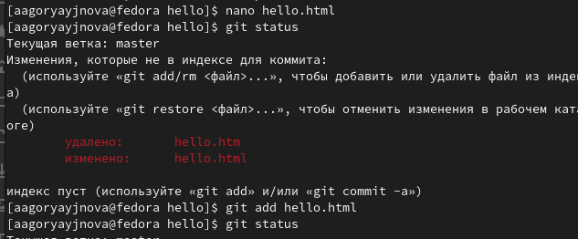

Лабораторная работа №1
Работа с Git
Горяйнова АА
Российский университет дружбы народов, Москва,
Россия
Информация
Докладчик
- Горяйнова Алёна Андреевна
- студентка
- Российский университет дружбы народов
Цель работы
Приобрести практические навыки работы с системой управления версиями
Git.
Задания
Создать репозиторий
Изменить его содержимое, изучить работу с коммитами, версиями и
тегами
Поработать с объектами Git
Создать дополнительную ветку, провести слияние, разрешение
конфликтов
Создать клон репозитория и слить его с оригинальным
Залить и извлечь изменения
Выполнение лабораторной работы
Подготовка
Настройка git
Создание проекта
Создание репозитория
Добавление файла в
репозиторий
Внесение изменений

Внесение изменений в содержимое
репозитория
Внесение изменений
Изменим страницу «Hello, World», чтобы она содержала стандартные теги
и
.
<html>
<body>
<h1>Hello, World!</h1>
</body>
</html>
Внесение изменений
Внесение нескольких изменений в
содержимое репозитория
Внесение изменений
Внесение нескольких изменений в
содержимое репозитория
История
Просмотр истории
Получение старых версий
Просмотр разных версий
репозитория
Создание тегов версий
Создание тегов версий
Отмена локальных
изменений (до индексации)
Отмена локальных изменений (до
индексации)
Отмена
проиндексированных изменений (перед коммитом)
Отмена проиндексированных изменений
(перед коммитом)
Отмена коммитов
Отмена коммитов
Удаление коммиттов из ветки
Удаление коммиттов из ветки
Удаление коммиттов из ветки
Ничего никогда не теряется
Удаление тега oops
Удаление тега oops
Изменение предыдущего
коммита
Изменение предыдущего
коммита
Изменение предыдущего
коммита
Изменение предыдущего
коммита
Перемещение файлов
Переместим наш файл в каталог lib. Для этого создадим его и
используем команду git mv, сделаем коммит этого пермещения.
Подробнее о структуре
Результат открытия
index.html
Git внутри: Каталог .git
 Каталог .git
Каталог .git
Работа непосредственно с
объектами git
Работа непосредственно с объектами
git
Создание ветки
Создание ветки
Создание ветки
Создание ветки
Навигация по веткам
Просмотр логов новой ветки
Навигация по веткам
Переключение на ветку master
Изменения в ветке master
Изменения в ветке master
Слияние
Слияние веток
Создание конфликта
Создание конфликта
Разрешение конфликтов
Конфликт
Разрешение конфликтов
Разрешение конфликта
Сброс ветки style
Поиск коммита перед слиянием
Сброс ветки style
Сброс ветки style
Сброс ветки master
Поиск коммита перед
конфликтом
Сброс ветки master
Сброс ветки master
Перебазирование
Перебазирование
Слияние в ветку master
Слияние style в master
Клонирование репозиториев
 Клонирование репозиториев
Клонирование репозиториев
Клонирование репозиториев
Клонирование репозиториев
Что такое origin?
Просмотр имени по умолчанию удаленного
репозитория
Удаленные ветки
Посмотрим на ветки, доступные в нашем клонированном репозитории.
Можно увидеть, что в списке только ветка master.
Изменение оригинального
репозитория
Изменение оригинального
репозитория
Изменение оригинального
репозитория
Извлечение изменений
Слияние извлеченных
изменений
Слияние извлеченных
изменений
Добавление ветки наблюдения
Добавление ветки наблюдения
Создание чистого репозитория
Создание чистого репозитория
Отправка и извлечение
изменений
Отправка изменений
Отправка и извлечение
изменений
Извлечение изменений
Выводы
В процессе выполнения данной лабораторной работы я приобрела
практические навыки работы с Git.